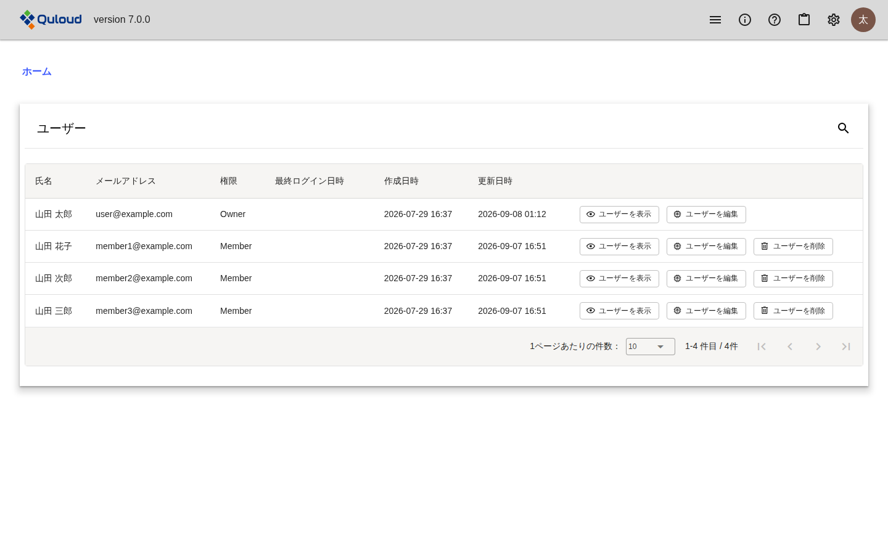
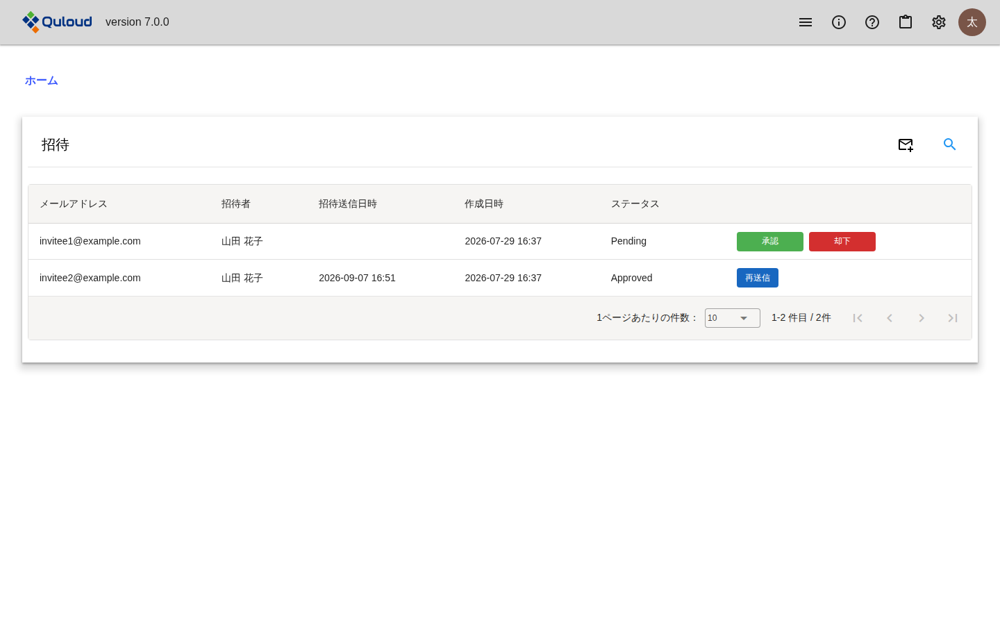
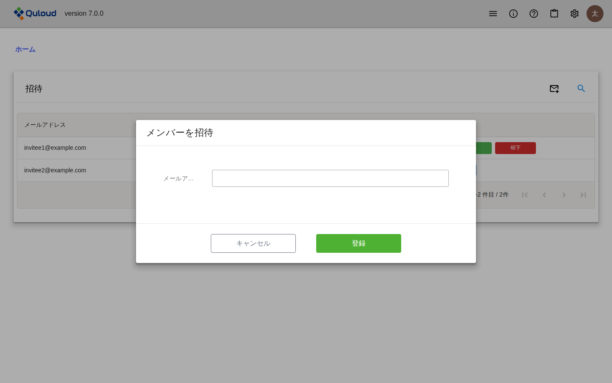

4. 新規ユーザーの招待
注釈
本章は Quloud Ver.7.0 を対象としています。記載内容の確認日は 2026 年 9 月 8 日です。
すべてのユーザーはいずれかのテナントに所属します。管理ユーザー（Owner）は、新規ユーザーを 自分が所属するテナントに招待して、モデリングや材料シミュレーションを共同で行ったり、 結果を共有したりすることができます。テナントとロールについては はじめに の章の 「用語」をご参照ください。
4.1. テナントのユーザーを確認する
ヘッダーの歯車のアイコン（「設定」）を押し、「ユーザー」を選びます。

図 4.1 ユーザー一覧
テナントに所属するユーザーが一覧で表示されます。「権限」の列には「Owner」または 「Member」が表示されます。
各行のボタンでできることは次のとおりです。「ユーザーを編集」と「ユーザーを削除」は 管理ユーザーにのみ表示されます。
ボタン |
できること |
|---|---|
ユーザーを表示 |
氏名・カナ・メールアドレス・権限を確認します。 |
ユーザーを編集 |
権限（Owner / Member）を変更します。 |
ユーザーを削除 |
ユーザーを削除します。自分自身と、権限が Owner のユーザーは削除できません。 |
利用申込（サインアップ の章）とサインイン（サインイン・サインアウト の章）を終えた直後は、 テナントのユーザーは本人のみです。ここに新規ユーザーを追加する方法を以下で説明します。
4.2. 新規ユーザーを招待する
ヘッダーの歯車のアイコン（「設定」）を押し、「招待」を選びます。

図 4.2 招待一覧
招待の一覧が表示されます。右上の封筒のアイコンから新しい招待を登録し、各行のボタンで 招待を進めます。これらの操作は管理ユーザーにのみ表示されます。
4.2.1. 招待するメールアドレスを登録する
一覧の右上にある封筒のアイコンを押すと、「メンバーを招待」ダイアログが開きます。

図 4.3 「メンバーを招待」ダイアログ
招待したいユーザーのメールアドレスを入力して「登録」ボタンを押すと、招待が一覧に 追加されます。このときのステータスは「Pending」で、招待メールはまだ送信されません。
4.2.2. 招待メールを送信する
ステータスが「Pending」の招待には「承認」と「却下」のボタンが表示されます。
「承認」を押すと、登録したメールアドレスに招待メールが送信され、ステータスが 「Approved」になります。
「却下」を押すと、その招待は削除されます。削除できるのはステータスが「Pending」の ときだけです。
ステータスが「Approved」の招待には「再送信」ボタンが表示されます。押すと招待メールが もう一度送信されます。
注釈
「再送信」を行うと、以前の招待メールに記載された URL は使えなくなります。 再送信のたびに新しい URL が発行されるためです。
4.2.3. 一覧に表示される招待
招待一覧は、初期状態ではステータスが「Pending」と「Approved」の招待だけを表示します。 登録が完了した招待（ステータス「Invited」）は表示されません。右上の虫めがねのアイコンから 検索条件のステータスを変更すると表示できます。
4.3. 招待された新規ユーザーの登録
ここからは、招待メールを受信したユーザー側の手順です。
招待メールに記載された URL を開くと、登録画面が表示されます。画面には招待元のテナント名と 招待されたメールアドレスが表示され、次の項目を入力します。
姓、名（必須）
姓カナ、名カナ（必須。カタカナまたは英字）
新しいパスワード、新しいパスワード（確認）（必須）
「登録」ボタンを押すと、サインイン・サインアウト の章で説明したサインイン画面に移ります。 登録したメールアドレスと、いま設定したパスワードでサインインしてください。
注釈
招待メールの URL は、メールが送信されてから 7 日間だけ有効です。 期限を過ぎた 場合は、テナントの管理ユーザーに「再送信」を依頼してください。
登録が完了すると、招待のステータスは「Invited」になり、ユーザー一覧に新しいユーザーが 追加されます。権限は「Member」です。管理ユーザーは、必要に応じてユーザー一覧の 「ユーザーを編集」から権限を「Owner」に変更できます。